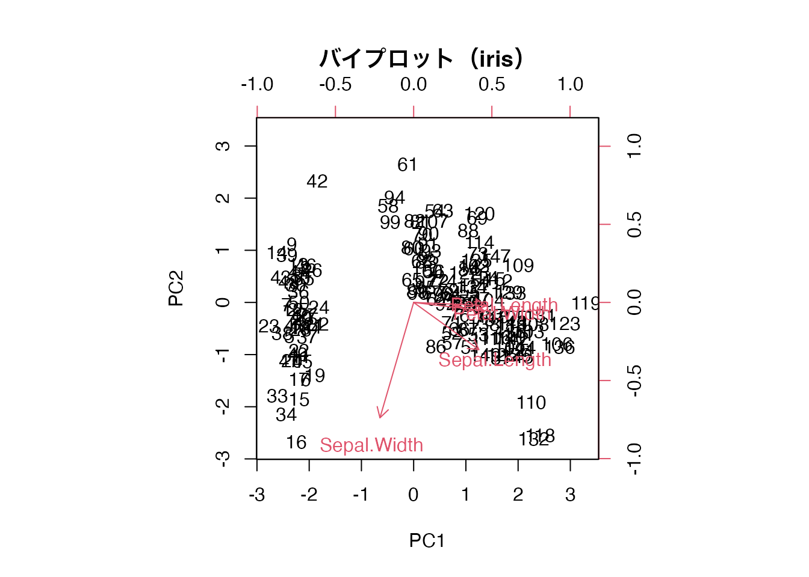
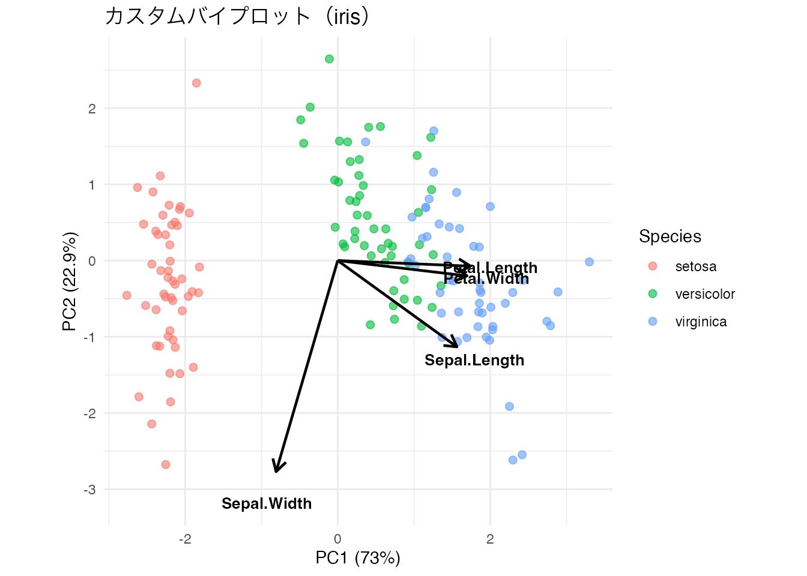
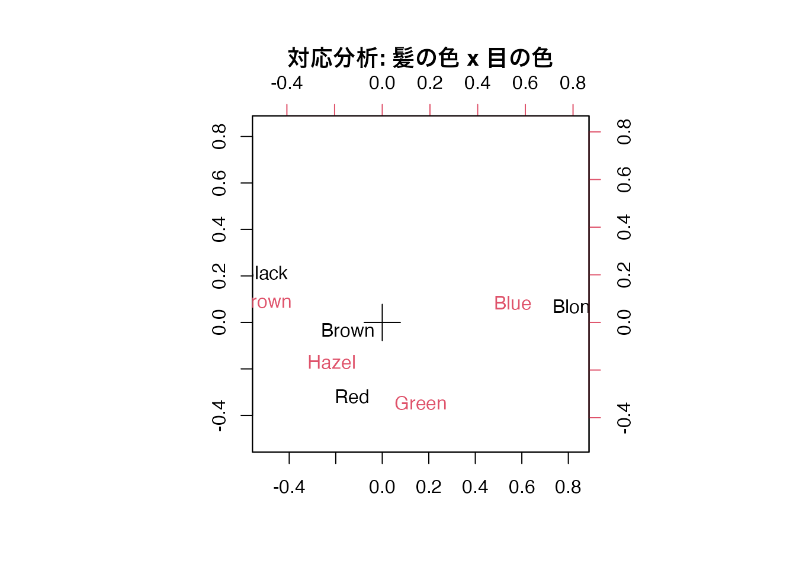
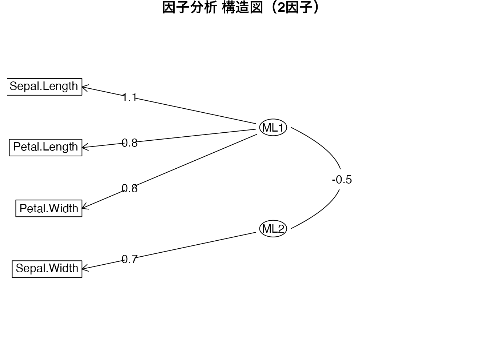

# irisの数値4変数でPCA
pca_result <- prcomp(iris[, 1:4], scale. = TRUE)
# バイプロット
biplot(pca_result, scale = 0,
main = "バイプロット（iris）",
xlab = "PC1", ylab = "PC2")
| 項目 | 内容 |
|---|---|
| 分類 | 枝（選択） |
| 前提 | U14（多変量解析・行方向）、U15（多変量解析・列方向） |
| 次のユニット | – |
| 使用データ | iris, psych::bfi, exametrika::J35S515 |
| 学習目標 | バイプロットの読み方を理解する / 対応分析の考え方と実行方法を知る / バイクラスタリングの概念と出力を解釈できる / 偏相関ネットワークの可視化と中心性指標を理解する |
U14では行方向（変数の要約: PCA、因子分析、SEM）、U15では列方向（個体の分類: クラスタリング、MDS）の分析を学びました。しかし実際のデータ分析では、変数と個体の関係を同時に把握したい場面が少なくありません。
たとえば、次のような問いを考えてみましょう。
これらはいずれも、データの行と列をまたぐ視点を持つ手法です。このユニットでは、それぞれの基本的な考え方と R での実行方法を学びます。
バイプロットは、主成分分析（PCA）の結果において、個体の主成分得点と変数の負荷量を同一の二次元平面上にプロットした図です。U14で biplot() を少し見ましたが、ここでその読み方を詳しく学びます。
バイプロットには以下の情報が含まれます。
矢印の解釈ルールは次の通りです。
| 矢印の特徴 | 意味 |
|---|---|
| 矢印が長い | その変数は主成分との関連が強い |
| 矢印が短い | その変数は主成分で説明しにくい |
| 2つの矢印が同じ方向 | 2変数は正の相関が高い |
| 2つの矢印が反対方向 | 2変数は負の相関が高い |
| 2つの矢印が直交 | 2変数はほぼ無相関 |
ある個体（点）が特定の矢印の方向に位置していれば、その個体はその変数の値が大きい傾向にあることを示します。
# irisの数値4変数でPCA
pca_result <- prcomp(iris[, 1:4], scale. = TRUE)
# バイプロット
biplot(pca_result, scale = 0,
main = "バイプロット（iris）",
xlab = "PC1", ylab = "PC2")
この図から、Petal.Length と Petal.Width は同じ方向（右下）を指しており、強い正の相関があることが読み取れます。Sepal.Width はこれらとほぼ反対方向を指しており、花弁の大きさとがく片の幅には負の関係があることがわかります。右側に位置する個体は花弁が大きい個体（virginica など）です。
対応分析は、クロス集計表（分割表）に対して適用する手法で、行カテゴリと列カテゴリの関連を二次元平面上に可視化します。質的変数に対する PCA 的な手法と言えます。双対尺度法（Dual Scaling）や数量化III類と原理的に同じものです。
R に組み込まれている HairEyeColor データを使って、髪の色と目の色の関連を分析してみましょう。
# HairEyeColorデータ: 男女を合算したクロス集計表を作る
hair_eye <- apply(HairEyeColor, c(1, 2), sum)
hair_eye Eye
Hair Brown Blue Hazel Green
Black 68 20 15 5
Brown 119 84 54 29
Red 26 17 14 14
Blond 7 94 10 16# MASS::corresp()による対応分析
pacman::p_load(MASS)
ca_result <- MASS::corresp(hair_eye, nf = 2)
# バイプロット表示
biplot(ca_result, main = "対応分析: 髪の色 x 目の色")
この図で近くにプロットされた行カテゴリと列カテゴリは、関連が強いことを表します。たとえば「Black（髪）」と「Brown（目）」が近くに位置していれば、黒髪の人は茶色の目を持つ傾向があることを示しています。
U15ではクラスタリング（個体の分類）を学びましたが、バイクラスタリングは行（個体）と列（変数）を同時に分類する手法です。テスト理論の文脈では、受検者を潜在的なランク（クラス）に、項目を潜在的なフィールドに同時に分類します。
| 観点 | 通常のクラスタリング | バイクラスタリング |
|---|---|---|
| 分類対象 | 行（個体）のみ、または列（変数）のみ | 行と列を同時に |
| 出力 | クラスタ所属 | クラス所属 + フィールド所属 |
| 解釈 | グループの特徴 | 「どのランクの人が、どのフィールドの項目に正答/誤答しやすいか」 |
exametrika パッケージの Biclustering() 関数でバイクラスタリングを実行できます。サンプルデータ J35S515 は35項目・515名のテストデータです。
以下のコードは exametrika パッケージがインストールされている場合に実行できます。未インストールの場合は install.packages("exametrika") で導入してください。
# exametrikaパッケージによるバイクラスタリング
pacman::p_load(exametrika)
# ランクラスタリング: 5フィールド x 6ランク
result_rc <- exametrika::Biclustering(J35S515,
nfld = 5, ncls = 6,
method = "R", verbose = FALSE
)
# アレイプロット: 左がローデータ、右が分類後
plot(result_rc, type = "Array")アレイプロット（Array Plot） は、行が受検者、列が項目で、正答を黒、誤答を白で表します。左側がローデータ、右側がランクとフィールドで並べ替えた結果です。分類後の図では、ランクが上がるにつれて正答が増える様子と、フィールドごとに項目がグループ化されている様子が見て取れます。
# フィールド参照プロファイル（FRP）
# 各ランクの受検者が各フィールドの項目に正答する確率
plot(result_rc, type = "FRP", nc = 2, nr = 3)FRP（Field Reference Profile） は、各フィールドについて、ランクごとの正答確率を折れ線グラフで示します。ランクが高くなるほど正答確率が上昇する「右肩上がり」のパターンが確認できます。フィールドごとに難易度の違いも見て取れます。
# ランクメンバーシッププロファイル（RMP）
# 個々の受検者のランク所属確率
plot(result_rc, type = "RMP", students = 1:9, nc = 3, nr = 3)RMP（Rank Membership Profile） は、個々の受検者がどのランクに所属する確率が高いかを示します。明確に1つのランクに所属する受検者もいれば、隣接するランクにまたがるファジィな所属を持つ受検者もいます。
U14の因子分析では、変数の背後に潜在因子を仮定しました。しかし、潜在因子を仮定せずに、変数同士の直接的な結びつきを可視化するアプローチもあります。これがネットワーク分析です。
通常の相関係数は、第三の変数による見かけ上の相関（擬似相関）を含む可能性があります。偏相関係数は、他のすべての変数の影響を統制した上での2変数間の関連を表します。
偏相関行列 \(\mathbf{P}\) の要素は、相関行列の逆行列 \(\mathbf{R}^{-1}\) から次のように計算されます。
\[ p_{ij} = -\frac{r^{ij}}{\sqrt{r^{ii} r^{jj}}} \]
ここで \(r^{ij}\) は \(\mathbf{R}^{-1}\) の \((i,j)\) 要素です。
この偏相関行列に対して、弱い結合を刈り込み（スパース化）してからネットワークとして可視化するのが、グラフィカルモデリングやネットワーク分析の基本的な流れです。qgraph パッケージでは、glasso（Graphical Lasso）法による正則化を用いて、重要でないパスを自動的に除去できます。
ネットワーク分析では、各ノード（変数）の重要性を中心性指標で評価します。
| 指標 | 意味 |
|---|---|
| Strength（強度） | そのノードに接続するエッジの重みの合計。他変数との関連が全体的にどれだけ強いか |
| Closeness（近接中心性） | 他のすべてのノードまでの最短距離の逆数。ネットワーク全体での「近さ」 |
| Betweenness（媒介中心性） | 他のノード間の最短経路上に位置する頻度。「橋渡し」の役割 |
| Expected Influence（期待影響力） | Strengthの改良版。正のエッジは加算、負のエッジは減算 |
バイプロットにおいて、矢印が長い変数ほど主成分との関連が強いことを示す。
バイプロットで2つの矢印がほぼ直角（90度）の関係にある場合、その2変数はどのような関係にあるか。
対応分析は、量的変数の相関行列に基づいて分析する手法である。
対応分析はクロス集計表（質的変数の共起頻度）に対して適用する手法です。
対応分析におけるイナーシャ（inertia）は、PCAにおける何に対応するか。
バイクラスタリングは、行（個体）と列（変数）を同時に分類する手法である。
バイクラスタリングと通常のクラスタリングの最も大きな違いはどれか。
ネットワーク分析における中心性指標のうち、ノードに接続するエッジの重みの合計を表すのはどれか。
iris データの数値4変数に対して prcomp(scale. = TRUE) で主成分分析を行い、biplot() でバイプロットを描きなさい。矢印の方向から、変数間の関係を読み取ること。
# irisのPCA
pca_iris <- prcomp(iris[, 1:4], scale. = TRUE)
# バイプロット
biplot(pca_iris, scale = 0,
main = "バイプロット（iris）",
xlab = "PC1", ylab = "PC2")
ggplot2を使って、irisのPCA結果をカスタムバイプロットとして描きなさい。個体の点を Species で色分けし、変数の矢印を geom_segment() で描くこと。
# PCAの得点と負荷量を取り出す
scores <- as.data.frame(pca_iris$x[, 1:2])
scores$Species <- iris$Species
loadings <- as.data.frame(pca_iris$rotation[, 1:2])
loadings$Variable <- rownames(loadings)
# スケーリング係数（矢印の長さを調整）
arrow_scale <- 3
# ggplot2によるカスタムバイプロット
ggplot() +
# 個体の散布図（種で色分け）
geom_point(data = scores,
aes(x = PC1, y = PC2, color = Species),
alpha = 0.6, size = 2) +
# 変数の矢印
geom_segment(data = loadings,
aes(x = 0, y = 0,
xend = PC1 * arrow_scale,
yend = PC2 * arrow_scale),
arrow = arrow(length = unit(0.3, "cm")),
color = "black", linewidth = 0.8) +
# 変数名ラベル
geom_text(data = loadings,
aes(x = PC1 * arrow_scale * 1.15,
y = PC2 * arrow_scale * 1.15,
label = Variable),
size = 3.5, fontface = "bold") +
labs(title = "カスタムバイプロット（iris）",
x = paste0("PC1 (", round(summary(pca_iris)$importance[2, 1] * 100, 1), "%)"),
y = paste0("PC2 (", round(summary(pca_iris)$importance[2, 2] * 100, 1), "%)")) +
theme_minimal() +
coord_equal()
ggplot2でバイプロットを自作すると、色分けやラベルの調整が自在にできます。軸ラベルに寄与率を表示するのも有用です。
HairEyeColor データ（男女合算）を使って対応分析を実行し、結果を可視化しなさい。MASS::corresp() を使うこと。
pacman::p_load(MASS)
# 男女を合算したクロス集計表
hair_eye <- apply(HairEyeColor, c(1, 2), sum)
hair_eye Eye
Hair Brown Blue Hazel Green
Black 68 20 15 5
Brown 119 84 54 29
Red 26 17 14 14
Blond 7 94 10 16# 対応分析の実行（2次元解）
ca_result <- MASS::corresp(hair_eye, nf = 2)
# 結果の確認
ca_resultFirst canonical correlation(s): 0.4569165 0.1490859
Hair scores:
[,1] [,2]
Black -1.1042772 1.4409170
Brown -0.3244635 -0.2191109
Red -0.2834725 -2.1440145
Blond 1.8282287 0.4667063
Eye scores:
[,1] [,2]
Brown -1.0771283 0.5924202
Blue 1.1980612 0.5564193
Hazel -0.4652862 -1.1227826
Green 0.3540108 -2.2741218# バイプロット
biplot(ca_result, main = "対応分析: 髪の色 x 目の色")
exametrika パッケージの Biclustering() を使って、サンプルデータ J35S515 に対して5フィールド・6ランクのランクラスタリングを実行し、アレイプロットを描きなさい。
注意: exametrika パッケージが未インストールの場合は install.packages("exametrika") で導入してください。
pacman::p_load(exametrika)
# ランクラスタリングの実行
result_rc <- exametrika::Biclustering(J35S515,
nfld = 5, ncls = 6,
method = "R", verbose = FALSE
)
# アレイプロット
plot(result_rc, type = "Array")アレイプロットの左側はローデータ（受検者 x 項目、黒=正答、白=誤答）を、右側は分析によって並べ替えた結果を示します。右側では、ランクが上がるにつれて正答（黒）が増え、フィールドごとに項目がまとまっていることが確認できます。
16-B-4の結果から、フィールド参照プロファイル（FRP）とランクメンバーシッププロファイル（RMP）を描き、結果を解釈しなさい。
# フィールド参照プロファイル（FRP）
# 各フィールドについて、ランクごとの正答確率を表示
plot(result_rc, type = "FRP", nc = 2, nr = 3)FRPの読み方:
# ランクメンバーシッププロファイル（RMP）
# 9人の受検者のランク所属確率
plot(result_rc, type = "RMP", students = 1:9, nc = 3, nr = 3)RMPの読み方:
psych::bfi データ（欠損値除去後の25項目）に対して、偏相関行列を計算しなさい。相関行列の逆行列から計算する方法を用いること。
pacman::p_load(psych)
# bfiデータの準備（25項目、欠損値除去）
bfi_data <- psych::bfi[complete.cases(psych::bfi), 1:25]
# 相関行列の計算
cor_matrix <- cor(bfi_data)
# 相関行列の逆行列
R_inv <- solve(cor_matrix)
# 偏相関行列の計算
partial_cor <- matrix(0, nrow = nrow(R_inv), ncol = ncol(R_inv))
for (i in 1:nrow(R_inv)) {
for (j in 1:ncol(R_inv)) {
if (i != j) {
# 偏相関の公式: p_ij = -r^ij / sqrt(r^ii * r^jj)
partial_cor[i, j] <- -R_inv[i, j] / sqrt(R_inv[i, i] * R_inv[j, j])
}
}
}
diag(partial_cor) <- 1
rownames(partial_cor) <- colnames(cor_matrix)
colnames(partial_cor) <- colnames(cor_matrix)
# 偏相関行列の一部を表示
round(partial_cor[1:5, 1:5], 3) A1 A2 A3 A4 A5
A1 1.000 -0.239 -0.136 -0.018 -0.038
A2 -0.239 1.000 0.250 0.159 0.100
A3 -0.136 0.250 1.000 0.160 0.248
A4 -0.018 0.159 0.160 1.000 0.064
A5 -0.038 0.100 0.248 0.064 1.000偏相関行列の値は相関行列に比べて全体的に小さくなっています。これは、他の変数の影響を取り除いた「純粋な」2変数間関連だけが残っているためです。
16-B-6で計算した偏相関行列を使って、qgraph パッケージでネットワークを描きなさい。glasso法で不要なパスを除去し、spring レイアウトで表示すること。また、中心性指標を centralityPlot() で可視化すること。
注意: qgraph パッケージが未インストールの場合は install.packages("qgraph") で導入してください。
pacman::p_load(qgraph)
# glasso法によるネットワーク推定
BICgraph <- qgraph::qgraph(
partial_cor,
graph = "glasso",
sampleSize = nrow(bfi_data),
tuning = 0,
layout = "spring",
title = "BIC",
threshold = TRUE,
details = TRUE
)ネットワーク図では、同じBig Five因子に属する項目（A1-A5, C1-C5, E1-E5, N1-N5, O1-O5）がクラスタを形成していることが確認できます。正のエッジ（緑/青）は正の偏相関、負のエッジ（赤/橙）は負の偏相関を示します。
# 中心性指標の可視化
qgraph::centralityPlot(
list(BIC = BICgraph),
include = "all"
)中心性指標の読み方:
irisデータに対して、バイプロット（PCA）と因子分析の構造図（psych::fa.diagram()）を並べて描き、両者の違いを比較しなさい。
# PCAのバイプロット
pca_iris <- prcomp(iris[, 1:4], scale. = TRUE)
biplot(pca_iris, scale = 0,
main = "PCA バイプロット",
xlab = "PC1", ylab = "PC2")# 因子分析（2因子）の構造図
fa_iris <- psych::fa(iris[, 1:4], nfactors = 2, rotate = "promax", fm = "ml")
psych::fa.diagram(fa_iris, main = "因子分析 構造図（2因子）")
両者の比較:
| 観点 | バイプロット（PCA） | 因子分析構造図 |
|---|---|---|
| 個体の情報 | 個体の位置が描かれる | 個体の情報はない |
| 変数の表現 | 矢印の方向と長さ | パス係数の値 |
| 次元の解釈 | 主成分（観測変数の線形結合） | 潜在因子（観測変数の背後にある構成概念） |
| 回転 | なし（固有値分解の直接的な結果） | 回転法を適用（解釈しやすい向きに） |
バイプロットは個体と変数の関係を同時に視覚的に把握できる点が強みです。一方、因子分析は潜在的な構造をモデルとして明示する点が強みです。
自分が関心のあるデータ（iris, bfi, またはその他のデータ）を選び、生成AIと相談しながら、以下の中から最も適切な分析手法を選択・実行してください。
AIの提案がデータの特性に合っているか、結果の解釈が妥当か、必ず自分で確認してください。
U14（因子分析・PCA）、U15（クラスタリング・MDS）、U16（バイプロット・対応分析・バイクラスタリング・ネットワーク分析）で学んだ手法を組み合わせて、psych::bfi データに対する総合的な多変量解析レポートを生成AIと協力して作成してください。
以下の要素を含むこと:
AIにコードの生成や解釈の支援を依頼してよいですが、結果の解釈と考察は自分の言葉でまとめてください。それぞれの手法が明らかにする側面の違いに注意しましょう。
このユニットで学んだこと: